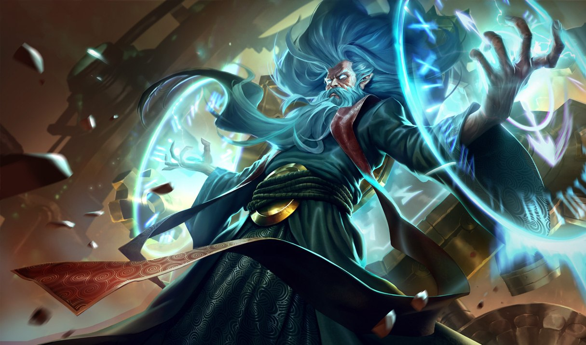

Zilean
Zilean is another one of the strong but unique champions. His kit mostly contains of keeping his teamamtes alive while providing buffs for his teammes and crowd-controlling the enemies. If his kit is used effectivly, he can be very frustrating to play with considering how he can keep any teammate alive with his ultimate which makes him have huge impact throughout the whole game.
